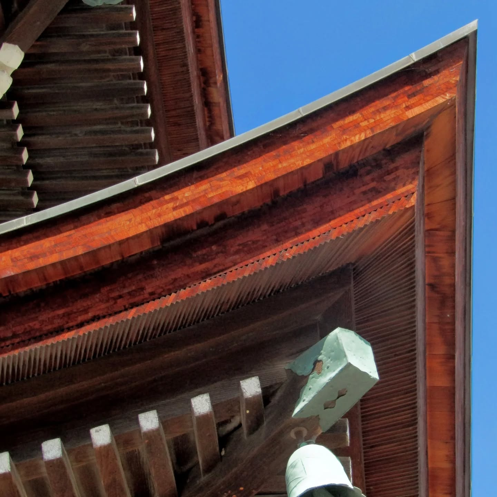
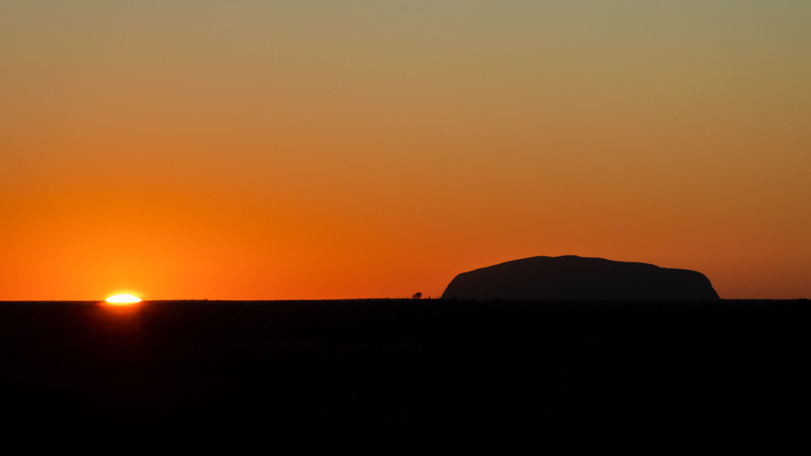
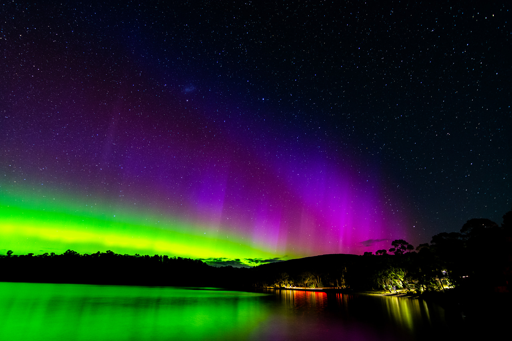

Japan
Takayama. A roofline caught from below, where timber, shadow, and curve do most of the speaking.
Japan begins here for me: not with landmarks, but with the small precision of built forms and the quiet attention they reward.
This is a personal archive of photographs and notes gathered across Japan, years on the road around Australia, and the beginning of a night sky chapter.
A small, mixed gallery of photographs that sit closest to the centre of the project. This can stay fluid and change over time.

Takayama. A roofline caught from below, where timber, shadow, and curve do most of the speaking.
Japan begins here for me: not with landmarks, but with the small precision of built forms and the quiet attention they reward.

Three years moving through the country. Not always dramatic, but always lived.
The road wasn’t just landscapes — it was the in-between moments, the stops, the small fragments that make up what travel actually feels like.

Tasmania. The first time the sky did something unexpected.
A quiet introduction to photographing light that doesn’t belong to the day.
kroppix is a personal photography project by Brett Kropp. It is not a portfolio in the commercial sense, but an evolving archive of photographs and reflections gathered over time.